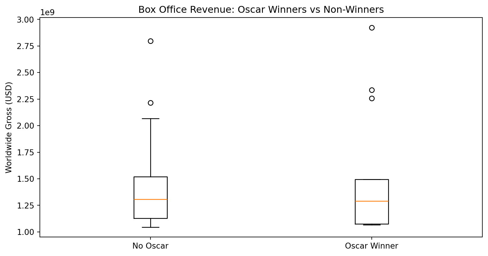

JSC 370: Data Science II
Week 5: Scraping and APIs
What is a Web API?
A Web API is an application programming interface for either a web server or a web browser. – Wikipedia
Examples:
How do APIs work?
HTTP Methods:
- GET: Request data from a server
- POST: Send data to a server
- PUT: Update existing data
- DELETE: Remove data
We’ll use the requests library in Python to interact with APIs.
Additional setup for APIs
In addition to requests we also need pandas (for all data science stuff!) and json
Structure of a URL

URL Structure
Structure of an API URL
https://api.themoviedb.org/3/discover/movie?api_key=abc123&sort_by=revenue.desc&page=1
\_____/\__________________/\_____________/\__________________________________________/
| | | |
Protocol Base URL Endpoint Query Parameters
(Path) (key=value pairs)Components:
| Part | Example | Purpose |
|---|---|---|
| Protocol | https:// |
Secure connection |
| Base URL | api.themoviedb.org/3 |
API server + version |
| Endpoint | /discover/movie |
Which resource to access |
| Query Params | ?api_key=...&sort_by=... |
Filter/customize results |
What is JSON?
JSON (JavaScript Object Notation) is the standard format for API responses.
Key features:
- Objects:
{ }contain key-value pairs - Arrays:
[ ]contain ordered lists - Values: strings, numbers, booleans, null, objects, or arrays
- Human-readable and easy to parse in Python with
.json()
Web APIs with curl
Under-the-hood, the requests library sends HTTP requests similar to curl:
Response (JSON):
The -X GET specifies the HTTP method, -H adds headers.
HTTP Status Codes

Remember these HTTP codes:
- 1xx: Information message
- 2xx: Success (200 = OK)
- 3xx: Redirection (301 = Moved Permanently)
- 4xx: Client error (404 = Not Found)
- 5xx: Server error (500 = Internal Server Error)
API Keys and Tokens
Sometimes APIs require authentication:
- API Key/Token: Passed in header or URL
- OAuth: More complex authentication flow
- Basic Auth: Username/password
Example 1: The Movie Database API to discover popular movies and their details.
Get your free API key at: themoviedb.org
Example 2: NOAA Climate Data API (data we used in earlier weeks)
Get your token at: https://www.ncdc.noaa.gov/cdo-web/token
Web API Example 1: The Movie Database (TMDB)
Using TMDB
TMDB API: Discovering Movies
# Discover top-grossing movies from 2020-2024
url = f"{BASE_URL}/discover/movie"
params = {
"api_key": API_KEY,
"sort_by": "revenue.desc",
"release_date.gte": "2020-01-01",
"release_date.lte": "2024-12-31",
"page": 1
}
response = requests.get(url, params=params, timeout=30)
print(f"Status Code: {response.status_code}")
print(f"URL: {response.url}")Status Code: 200
URL: https://api.themoviedb.org/3/discover/movie?api_key=f6600b8ecd0876798ce46888f63faf47&sort_by=revenue.desc&release_date.gte=2020-01-01&release_date.lte=2024-12-31&page=1TMDB API: Understanding Query Parameters
Each parameter customizes what movies we get back:
| Parameter | Value | Effect |
|---|---|---|
sort_by |
revenue.desc |
Highest-grossing first |
release_date.gte |
2020-01-01 |
Only movies from 2020+ |
release_date.lte |
2024-12-31 |
Only movies up to 2024 |
page |
1 |
First 20 results |
How Do We Know What Parameters Are Available?
Read the API documentation! Every API publishes docs explaining:
- Available endpoints (URLs)
- Required vs optional parameters
- Authentication method
- Response format and fields
How Do We Know What Parameters Are Available?

TMDB API: Understanding the Response
response.json parses the HTTP response body as JSON and return it as normal Python objects (usually a dict or list)
Total results: 240380
Total pages: 12019
Movies on this page: 20TMDB API: Extracting Movie Data
# Extract movie information from results this turns into a list
movies = []
for movie in data.get('results', []):
movies.append({
'movie_id': movie.get('id'),
'title': movie.get('title'),
'release_date': movie.get('release_date'),
'popularity': movie.get('popularity'),
'vote_average': movie.get('vote_average')
})
# Convert to DataFrame
df_movies = pd.DataFrame(movies)
print(f"Found {len(df_movies)} movies")
df_movies.head(10)Found 20 movies| movie_id | title | release_date | popularity | vote_average | |
|---|---|---|---|---|---|
| 0 | 19995 | Avatar | 2009-12-16 | 43.7770 | 7.600 |
| 1 | 299534 | Avengers: Endgame | 2019-04-24 | 17.3797 | 8.236 |
| 2 | 76600 | Avatar: The Way of Water | 2022-12-14 | 41.0016 | 7.600 |
| 3 | 597 | Titanic | 1997-12-18 | 30.2952 | 7.902 |
| 4 | 140607 | Star Wars: The Force Awakens | 2015-12-15 | 9.9024 | 7.252 |
| 5 | 299536 | Avengers: Infinity War | 2018-04-25 | 28.5981 | 8.234 |
| 6 | 634649 | Spider-Man: No Way Home | 2021-12-15 | 25.5223 | 7.934 |
| 7 | 1022789 | Inside Out 2 | 2024-06-11 | 21.0638 | 7.546 |
| 8 | 420818 | The Lion King | 2019-07-12 | 9.3301 | 7.097 |
| 9 | 24428 | The Avengers | 2012-04-25 | 67.3150 | 7.928 |
TMDB API: Getting Movie Details
Each movie has additional details available that we can extract.
Here we extract one movie and see several attributes:
# Get details for a specific movie (e.g., movie_id = 550 is Fight Club)
movie_id = 550
detail_url = f"{BASE_URL}/movie/{movie_id}"
detail_response = requests.get(detail_url, params={"api_key": API_KEY}, timeout=30)
movie_details = detail_response.json()
print(f"Title: {movie_details.get('title')}")
print(f"Budget: ${movie_details.get('budget'):,}")
print(f"Revenue: ${movie_details.get('revenue'):,}")
print(f"Runtime: {movie_details.get('runtime')} minutes")
print(f"Genres: {[g['name'] for g in movie_details.get('genres', [])]}")Title: Fight Club
Budget: $63,000,000
Revenue: $100,853,753
Runtime: 139 minutes
Genres: ['Drama', 'Thriller']TMDB API: Fetching Multiple Pages
The discover endpoint returns 20 movies per page. To get more data, we loop through pages:
import time
# Fetch first 3 pages of results (60 movies)
all_movies = []
for page in range(1, 4):
params = {
"api_key": API_KEY,
"sort_by": "revenue.desc",
"release_date.gte": "2020-01-01",
"page": page
}
resp = requests.get(f"{BASE_URL}/discover/movie", params=params, timeout=30)
data = resp.json()
for movie in data.get('results', []):
all_movies.append({
'id': movie.get('id'),
'title': movie.get('title'),
'popularity': movie.get('popularity')
})
print(f"Page {page}: fetched {len(data.get('results', []))} movies")
time.sleep(0.25) # Be polite: wait 250ms between requests
print(f"\nTotal movies collected: {len(all_movies)}")Page 1: fetched 20 movies
Page 2: fetched 20 movies
Page 3: fetched 20 movies
Total movies collected: 60Web API Example 2: HHS Health Recommendations
The Health.gov API provides demographic-specific health recommendations. This API does not require a key or token
Status Code: 200HHS: Extracting Health Recommendations
data = response.json()
# Extract recommendation titles
titles = []
resources = data.get('Result', {}).get('Resources', {})
for category in resources.values():
if isinstance(category, dict) and 'Resource' in category:
for resource in category['Resource']:
titles.append(resource.get('Title', 'N/A'))
print("Health Recommendations:")
for title in titles[:10]:
print(f" - {title}")Health Recommendations:
- Quit Smoking
- Hepatitis C Screening: Questions for the Doctor
- Protect Yourself from Seasonal Flu
- Talk with Your Doctor About Depression
- Get Your Blood Pressure Checked
- Get Tested for HIV
- Get Vaccines to Protect Your Health (Adults Ages 19 to 49 Years)
- Drink Alcohol Only in Moderation
- Talk with Your Doctor About Drug Misuse and Substance Use Disorder
- Aim for a Healthy WeightHHS: params

Why Use a Dictionary for Parameters?
Instead of this:
Do this:
Benefits:
- Automatic URL encoding (handles special characters)
- Easier to read and modify
- No manual string concatenation errors
Common Parameter Patterns in APIs
| Parameter Type | Example | Purpose |
|---|---|---|
| Filtering | ?status=active |
Only return matching items |
| Pagination | ?page=2&limit=50 |
Control result batches |
| Sorting | ?sort=date&order=desc |
Order results |
| Fields | ?fields=name,email |
Select specific data |
| Search | ?q=python |
Text search |
| Format | ?format=json |
Response format |
Timeout and Connection Options
Sometimes APIs are slow. Use the timeout parameter:
Rate Limiting
Many APIs limit how many requests you can make. Use time.sleep() to be polite:
Why rate limit?
- Avoid getting blocked (HTTP 429: Too Many Requests)
- Be a good API citizen
- Most APIs specify limits in their documentation
POST Requests: Sending Data
So far we’ve used GET to retrieve data. POST sends data to a server:
Common POST use cases:
- Creating new records (users, posts, comments)
- Submitting forms
- Sending data for processing (e.g., ML model predictions)
Note: Most data retrieval APIs use GET; POST is mainly for writing data.
Error Handling
def safe_api_call(url, params=None, timeout=30):
"""Make an API call with proper error handling."""
try:
response = requests.get(url, params=params, timeout=timeout)
response.raise_for_status() # Raises exception for 4xx/5xx
return response.json()
except requests.exceptions.Timeout:
print("Request timed out")
except requests.exceptions.HTTPError as e:
print(f"HTTP error: {e}")
except requests.exceptions.RequestException as e:
print(f"Request failed: {e}")
return None
# Example usage
data = safe_api_call("https://api.github.com/users/octocat")
if data:
print(f"User: {data.get('login')}")User: octocatError Handling: Why Each Part Matters
| Component | What it does | Why it matters |
|---|---|---|
try: |
Wraps risky operations | APIs can fail for many reasons outside your control |
timeout=30 |
Limits wait time | Prevents your script from hanging indefinitely |
raise_for_status() |
Converts HTTP 4xx/5xx to exceptions | Without this, error responses look “successful” |
Timeout exception |
Catches slow/unresponsive servers | Network issues, server overload |
HTTPError exception |
Catches bad responses (404, 500, etc.) | Invalid URLs, rate limiting (429), server errors |
RequestException |
Catches everything else | DNS failures, connection refused, SSL errors |
return None |
Signals failure gracefully | Caller can check if data: instead of crashing |
Without error handling, a single failed API call would crash your entire script—especially problematic when looping through hundreds of requests.
API Best Practices
- Read the documentation - Every API is different
- Respect rate limits - Use
time.sleep()between requests - Handle errors gracefully - Check status codes
- Use timeouts - Don’t hang indefinitely
- Store tokens securely - Never commit API keys to git!
Summary: APIs
- Use the requests library for HTTP calls
- Pass parameters as dictionaries
- Pass tokens in headers
- Handle timeouts and errors
- Parse JSON responses with
.json()
Fundamentals of Web Scraping
Web scraping, web harvesting, or web data extraction is data scraping used for extracting data from websites – Wikipedia
How in Python?
- requests: Fetch web pages
- pandas.read_html(): Extract tables directly
- BeautifulSoup: Parse and navigate HTML/XML documents
- selenium: For dynamic websites with JavaScript
Scraping Data from a Webpage
Webpages contain data but are written in HTML, CSS, and JavaScript.

Inspecting HTML with Browser DevTools
To scrape a webpage, you need to understand its HTML structure:
- Right-click on the element you want → Inspect
- The Elements panel shows the HTML structure
- Hover over elements to highlight them on the page
- Look for patterns: tag names, classes, IDs
Common HTML elements to look for:
| Element | Tag | Example |
|---|---|---|
| Tables | <table> |
Data tables |
| Links | <a href="..."> |
Navigation, references |
| Paragraphs | <p> |
Text content |
| Divs | <div class="..."> |
Content containers |
| Lists | <ul>, <ol>, <li> |
Bulleted/numbered items |
HTML Tables
HTML tables use these tags:
<table>- the container<tr>- table row<th>- header cell<td>- data cell
Setup for Scraping
Making Requests with Headers
Always include a User-Agent header to identify yourself:
# URLs for our movie data
BOXOFFICE_URL = "https://en.wikipedia.org/wiki/List_of_highest-grossing_films"
OSCARS_URL = "https://en.wikipedia.org/wiki/List_of_Academy_Award%E2%80%93winning_films"
# Headers to identify ourselves
HEADERS = {
"User-Agent": "jsc370-class-project/1.0 (educational use)",
"Accept-Language": "en-US,en;q=0.9",
}Why Use Headers?
1. Servers may block requests without a User-Agent
Without headers, requests sends a default like python-requests/2.28.0. Many websites block or rate-limit requests that look like bots.
2. Identifying yourself is good etiquette
If your script causes problems, site admins can contact you instead of blocking your IP.
3. Accept-Language controls content language
Wikipedia serves content in different languages based on this header.
| Header | Purpose | Example |
|---|---|---|
User-Agent |
Identifies the client | "MyApp/1.0 (contact@email.com)" |
Accept-Language |
Preferred language | "en-US,en;q=0.9" |
Accept |
Expected response format | "application/json" |
Authorization |
API tokens/credentials | "Bearer abc123" |
Fetching the Data
Use requests.get to grab the website data from the url
# Request the box office page
boxoffice_request = requests.get(BOXOFFICE_URL, headers=HEADERS, timeout=30)
if boxoffice_request.ok:
print("Box office response OK:", boxoffice_request.status_code)
else:
print("Request failed:", boxoffice_request.status_code)
# Request the Oscars page
oscars_request = requests.get(OSCARS_URL, headers=HEADERS, timeout=30)
print("Oscars response:", oscars_request.status_code)Box office response OK: 200
Oscars response: 200Parsing Tables
We want to turn HTML <table> tags into pandas DataFrames.
pd.read_html()scans HTML and returns a list of DataFrames—one per table found.StringIO()wraps the HTML string to look like a file-like object.
# Parse all tables from each page
box_tables = pd.read_html(StringIO(boxoffice_request.text))
osc_tables = pd.read_html(StringIO(oscars_request.text))
print(f"Found {len(box_tables)} tables on box office page")
print(f"Found {len(osc_tables)} tables on Oscars page")
# Get the main tables (first table on each page)
box = box_tables[0]
osc = osc_tables[0]Found 91 tables on box office page
Found 2 tables on Oscars pageIf the page has multiple tables, you might need to choose by inspecting box_tables[i].columns or by matching a column name.
Inspecting the Data
Print out the data in box and osc
Box Office Data:
Rank Peak Title Worldwide gross Year Ref
0 1 1 Avatar $2,923,710,708 2009 [# 1][# 2]
1 2 1 Avengers: Endgame $2,797,501,328 2019 [# 3][# 4]
2 3 3 Avatar: The Way of Water $2,334,484,620 2022 [# 5][# 6]
3 4 1 Titanic T$2,257,906,828 1997 [# 7][# 8]
4 5 5 Ne Zha 2 NZ$2,215,690,000 2025 [# 9][# 10]
Oscar Winners Data:
Film Year Awards Nominations
0 Anora 2024 5 6
1 The Brutalist 2024 3 10
2 Emilia Pérez 2024 2 13
3 Wicked 2024 2 10
4 Dune: Part Two 2024 2 5Merging DataFrames
Combine data using merge():
osc["Year"] = pd.to_numeric(osc["Year"].astype(str).str.extract(r"(\d{4})")[0], errors="coerce")
osc["Year"] = osc["Year"].astype("Int64")
# Left join: keep all box office films, add Oscar data where available
merged = box.merge(
osc,
how='left',
left_on=['Title', 'Year'],
right_on=['Film', 'Year']
)This requires a few steps due to messy scraped data. We will come back to this later
Scraping Beyond Tables: BeautifulSoup
While pd.read_html() is great for tables, BeautifulSoup can extract any HTML element:
# Parse the box office page with BeautifulSoup
soup = BeautifulSoup(boxoffice_request.content, 'html.parser')
# Find the first paragraph
first_paragraph = soup.find('p')
print("First paragraph:", first_paragraph.get_text()[:100], "...")
# Find all section headings
headings = soup.find_all('h2')
print(f"\nFound {len(headings)} section headings")
# Find the table of contents
toc = soup.find(id='toc')
print(f"Table of contents found: {toc is not None}")First paragraph:
...
Found 10 section headings
Table of contents found: FalseBeautifulSoup: Extracting Links
# Extract all citation/reference links from the films page
references = []
for link in soup.find_all('a', href=True):
href = link['href']
text = link.get_text().strip()
# Find external reference links (not Wikipedia internal links)
if href.startswith('http') and 'wikipedia' not in href and text:
references.append({
'text': text[:50], # Truncate long text
'url': href[:60] # Truncate long URLs
})
# Show first few external references
refs_df = pd.DataFrame(references[:8])
print(refs_df) text \
0 Wikidata item
1 "Movies aren't the only B.O. monsters"
2 Archived
3 "Avatar – Video Sales"
4 Archived
5 "Unkind unwind"
6 Archived
7 224
url
0 https://www.wikidata.org/wiki/Special:EntityPa...
1 https://variety.com/2006/legit/news/movies-are...
2 https://web.archive.org/web/20210420110457/htt...
3 https://www.the-numbers.com/movie/Avatar#tab=v...
4 https://web.archive.org/web/20181125204128/htt...
5 https://www.economist.com/briefing/2011/03/17/...
6 https://web.archive.org/web/20170904063950/htt...
7 https://books.google.com/books?id=BfyFFCyRvX0C... Key BeautifulSoup methods:
soup.find('tag')- first matching elementsoup.find_all('tag')- all matching elementselement.get_text()- extract text contentelement['attribute']- get attribute value (e.g.,href)
Regular Expressions in Python
Why regex? Scraped data is messy. Years appear as “2020/21”, currencies as “$2,923,710,708”, and text contains footnotes like “[1]”. Regex lets you extract and clean patterns programmatically.
The re module provides regex support:
Found emails: ['support@example.com', 'sales@company.org']
Redacted: Contact us at [EMAIL] or [EMAIL]Breaking Down the Email Pattern
r'[\w\.-]+@[\w\.-]+'| Part | Meaning | Matches |
|---|---|---|
[\w\.-] |
Character class: word chars, dots, hyphens | s, u, p, ., - |
+ |
One or more of the previous | support, example.com |
@ |
Literal @ symbol | @ |
[\w\.-]+ |
Same pattern after @ | example.com |
Key re functions:
| Function | Purpose | Example |
|---|---|---|
re.findall(pattern, text) |
Find all matches | Returns list of matches |
re.search(pattern, text) |
Find first match | Returns match object or None |
re.sub(pattern, repl, text) |
Replace matches | Returns modified string |
Common Regex Patterns
| Pattern | Meaning |
|---|---|
\d |
Digit (0-9) |
\w |
Word character (a-z, A-Z, 0-9, _) |
\s |
Whitespace |
. |
Any character |
* |
Zero or more |
+ |
One or more |
? |
Zero or one |
[] |
Character class |
^ |
Start of string |
$ |
End of string |
Cleaning Data with Regular Expressions
Some values need cleaning (e.g., “2020/21” should be “2020”):
# Extract just the first 4-digit year
year_example = "2020/21"
clean_year = re.search(r'\d{4}', year_example).group()
print(f"'{year_example}' -> '{clean_year}'")
# Clean currency: "$2,923,710,708" -> 2923710708
gross_example = "$2,923,710,708"
clean_gross = re.sub(r'[^\d]', '', gross_example)
print(f"'{gross_example}' -> {int(clean_gross)}")'2020/21' -> '2020'
'$2,923,710,708' -> 2923710708Understanding the Cleaning Patterns
Pattern 1: Extract year r'\d{4}'
| Part | Meaning |
|---|---|
\d |
Any digit (0-9) |
{4} |
Exactly 4 of them |
Matches: "2020" from "2020/21" — ignores the /21 part
Pattern 2: Remove non-digits r'[^\d]'
| Part | Meaning |
|---|---|
[^...] |
NOT these characters (negation) |
\d |
Digits |
| Together | Match anything that is NOT a digit |
re.sub(r'[^\d]', '', text) replaces all non-digits with nothing, leaving only numbers.
"$2,923,710,708" → "2923710708"
Cleaning the Year Column
Year Year_clean
0 2024 2024
1 2024 2024
2 2024 2024
3 2024 2024
4 2024 2024
5 2024 2024
6 2024 2024
7 2024 2024
8 2024 2024
9 2024 2024Merging Box Office and Oscar Data
# Clean the year column first
osc['Year'] = pd.to_numeric(
osc['Year'].astype(str).str.extract(r'(\d{4})', expand=False),
errors='coerce'
)
# Merge the dataframes
merged = box.merge(
osc,
how='left',
left_on=['Title', 'Year'],
right_on=['Film', 'Year']
)
print(f"Merged shape: {merged.shape}")
merged[['Title', 'Year', 'Worldwide gross', 'Awards']].head(10)Merged shape: (50, 10)| Title | Year | Worldwide gross | Awards | |
|---|---|---|---|---|
| 0 | Avatar | 2009 | $2,923,710,708 | 3 |
| 1 | Avengers: Endgame | 2019 | $2,797,501,328 | NaN |
| 2 | Avatar: The Way of Water | 2022 | $2,334,484,620 | 1 |
| 3 | Titanic | 1997 | T$2,257,906,828 | 11 |
| 4 | Ne Zha 2 | 2025 | NZ$2,215,690,000 | NaN |
| 5 | Star Wars: The Force Awakens | 2015 | $2,068,223,624 | NaN |
| 6 | Avengers: Infinity War | 2018 | $2,048,359,754 | NaN |
| 7 | Spider-Man: No Way Home | 2021 | SM$1,922,598,800 | NaN |
| 8 | Zootopia 2 † | 2025 | $1,776,957,359 | NaN |
| 9 | Inside Out 2 | 2024 | $1,698,863,816 | NaN |
Cleaning Worldwide Gross
# Extract numbers from gross column using regex
# Pattern matches: 1,234,567 or just 1234567
gross_clean = (merged['Worldwide gross']
.astype(str)
.str.extract(r'(\d{1,3}(?:,\d{3})+|\d{4,})', expand=False)
.str.replace(',', '', regex=False)
.astype('Int64'))
merged['gross_clean'] = gross_clean
merged[['Title', 'Worldwide gross', 'gross_clean']].head()| Title | Worldwide gross | gross_clean | |
|---|---|---|---|
| 0 | Avatar | $2,923,710,708 | 2923710708 |
| 1 | Avengers: Endgame | $2,797,501,328 | 2797501328 |
| 2 | Avatar: The Way of Water | $2,334,484,620 | 2334484620 |
| 3 | Titanic | T$2,257,906,828 | 2257906828 |
| 4 | Ne Zha 2 | NZ$2,215,690,000 | 2215690000 |
Handling Missing Values
Title Awards won_oscar
0 Avatar 3 True
1 Avengers: Endgame 0 False
2 Avatar: The Way of Water 1 True
3 Titanic 11 True
4 Ne Zha 2 0 False
5 Star Wars: The Force Awakens 0 False
6 Avengers: Infinity War 0 False
7 Spider-Man: No Way Home 0 False
8 Zootopia 2 † 0 False
9 Inside Out 2 0 FalseComparing Oscar Winners vs Non-Winners
num_movies avg_gross median_gross
won_oscar
False 37 1409851897.621622 1308476166.0
True 13 1510293283.384615 1290000000.0Visualizing the Results
import matplotlib.pyplot as plt
no_wins = merged[merged['won_oscar'] == False]['gross_clean'].dropna()
winners = merged[merged['won_oscar'] == True]['gross_clean'].dropna()
plt.boxplot([no_wins, winners], tick_labels=["No Oscar", "Oscar Winner"])
plt.ylabel("Worldwide Gross (USD)")
plt.title("Box Office Revenue: Oscar Winners vs Non-Winners")
plt.show()
Summary: Web Scraping
- Use BeautifulSoup to parse HTML
- Use pandas.read_html() for tables
- Clean data with regular expressions
- Be respectful - check
robots.txt